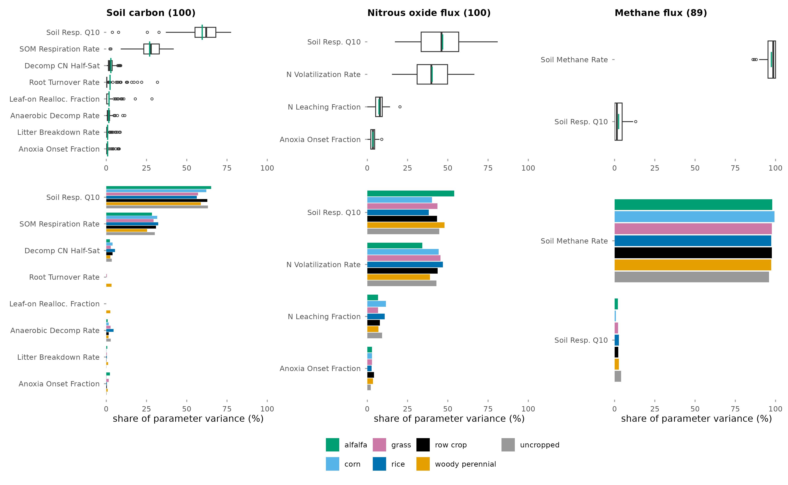
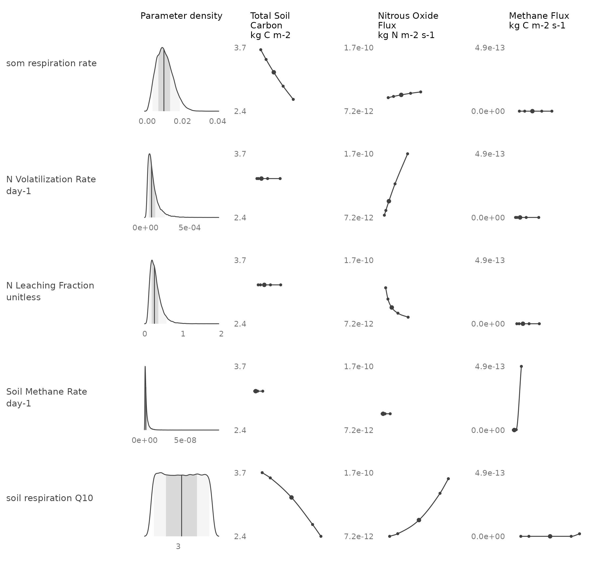
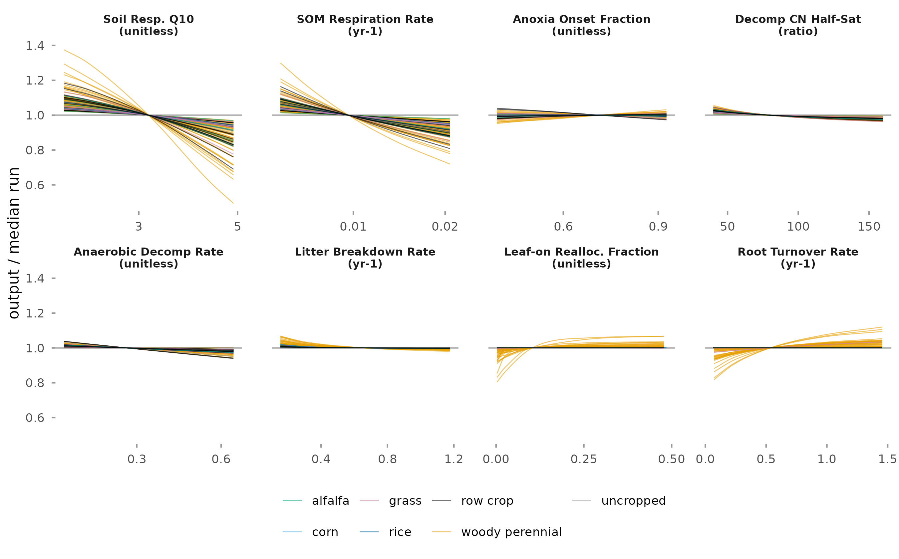

Local Sensitivity Analysis
This report ranks the parameters of the SIPNET ecosystem model by their contribution to the uncertainty of modeled soil carbon and nitrous oxide flux. The analysis covers 100 design points on California cropland over 2016 to 2023. Results are each parameter’s share of parameter variance at each design point.
Background
A parameter matters for prediction when the model is sensitive to it and its value is uncertain. The analysis combines the two, following the PEcAn variance decomposition (LeBauer et al., 2013; Dietze et al., 2014).
SIPNET is run with every parameter at its prior median, then with each parameter moved in turn to the 2.3, 15.9, 84.1, and 97.7 percentiles of its prior, all others at their median. A spline through the five outputs gives the response to that parameter, and the variance of the prior propagated through the spline is its contribution to the output variance. The share of parameter variance is that contribution over the sum across all plant and soil parameters at the design point. A parameter is treated as influential where its share exceeds 5 percent, the criterion Fer et al. (2018) used to select SIPNET parameters for calibration (Fer et al., 2018).

| Setting | Value |
|---|---|
| Model | SIPNET 2.2.0, nitrogen cycle and anaerobic processes on |
| Design points | 100: 67 woody perennial, 14 row crop, 6 grass, 4 alfalfa, 3 rice, 2 corn, 4 uncropped |
| Period | 2016 to 2023, reported as the mean over the period |
| Parameters | 34 per cropped design point (21 plant, 13 soil), 13 per uncropped design point |
| Priors | PFT priors of the statewide inventory runs |
| Meteorology, initial conditions, management | member 1 of each inventory ensemble |
| Model runs | 13,364 |
Variation across design points and PFTs

The two parameters with the largest mean share are the same in every PFT for each output.
Response to each parameter



Reporting scope
Shares are reported for soil carbon and nitrous oxide flux. Methane and six other outputs were also computed. Modeled methane is near the precision of the model output, and plant carbon is low in these runs, with net primary productivity below 20 g C m-2 yr-1 at the median design point of every PFT; shares for these outputs are not presented.
Interpretation
These are model-derived results. Parameters are drawn from priors that have not been updated with observations, so each share depends on the prior widths; the prior for the soil respiration Q10 is uniform from 1.4 to 5.0.
Each parameter is varied with all others at their medians, so the shares divide the sum of single-parameter contributions and do not include interactions (Saltelli et al., 2019). Meteorology, initial conditions, and management are held at one ensemble member; the global sensitivity analysis compares those inputs with the parameters. In SIPNET 2.2.0 the nitrous oxide output is the total nitrogen volatilization flux.
See References for the cited sources.